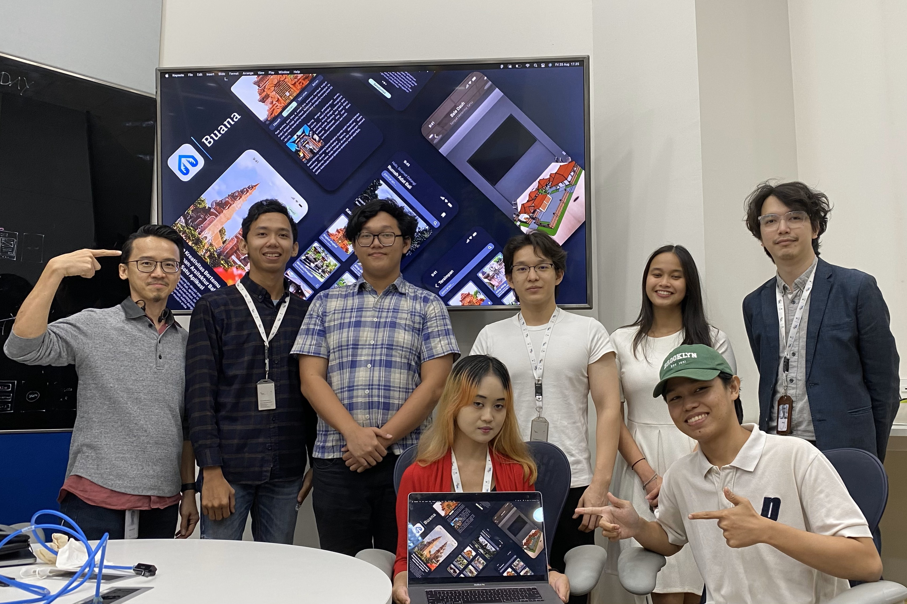

Projects
A showcase of my creative and technical works


Healthy Habits Hero
Buana is an educational app created during my time at the Apple Developer Academy. It promotes sustainable living through gamified lessons and interactive challenges. My role included both design and development, emphasizing user experience, intuitive navigation, and meaningful content.

Buana
Buana is an educational app created during my time at the Apple Developer Academy. It promotes sustainable living through gamified lessons and interactive challenges. My role included both design and development, emphasizing user experience, intuitive navigation, and meaningful content.


BetterStudy
BetterStudy is an app designed to bridge the gap between mental health and academic performance. Developed as a solution to the limitations of traditional study aids, BetterStudy offers an approach that combines study strategies with mental health support. My role in the project involved both design and development, focusing on creating a user-friendly experience, seamless navigation, and content that addresses both well-being and academic success.


Muemo
A compilation of animated visual design projects involving 3D typography, motion storytelling, and post-production effects. This reel highlights my visual experimentation, precise timing, and storytelling through movement.


PennyPlanner
A compilation of animated visual design projects involving 3D typography, motion storytelling, and post-production effects. This reel highlights my visual experimentation, precise timing, and storytelling through movement.